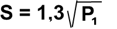
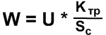
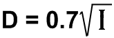
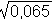
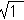

Простой расчет трансформатора
Данная методика расчета трансформаторов конечно очень приблизительная но для радиолюбительской практики вполне подходит. Кроме этого нижеперечисленные расчеты актуальны только лишь для трансформаторов с Ш-образным сердечником и для работы с током промышленной частоты 50 Гц.
И еще один нюанс: при самостоятельной намотке трансформаторов следует учитывать очень важный факт - количество витков в первичной обмотке. Чем выше количество витков тем выше её сопротивление и следовательно будет ниже нагрев. Кроме того: при большом сопротивлении в первичке будет и ниже ток покоя, а следовательно ниже уровень паразитных помех. Поэтому при расчетах мы будем принимать коэффициент трансформации равным 50. (можно и больше, но тогда количество витков еще больше возрастет).
Задача: нужен трансформатор с выходным напряжением 12 В и током на вторичной обмотке не менее 1A (если обмоток несколько то токи складываются).
Мощность вторичной обмотки:
P2 = I2 · U2 = 12 · 1 = 12 [Вт]
Так как КПД у трансформаторов приблизительно 85%, то мощность забираемая первичкой при работе будет приблизительно в 1,2 раза выше и получится
P2 =12 · 1,2 = 14,4 [Вт].
Исходя из этого можно посчитать площадь сердечника:

,где
S - площадь сердечника,
P1 - мощность первичной обмотки.
Получится 4,93 ≈ 5 см2 .
Это необходимая минимальная площадь сердечника. Если есть возможность применить больше - это даже лучше.
Рассчитываем количество витков по формуле:

где
W - количество витков,
Ктр - коэффициент трансформации,
Sс - площадь сечения сердечника.
Так как Ктр=50, то:
W1 = 50/5 · 220 = 2200.
W2= 50/5 · 12 = 120.
Рассчитываем диаметр провода по формуле:

где I - ток протекающий через обмотку.
Рассчитываем ток через первичную обмотку используя напряжение и мощность первичной обмотки:
I1= P1/U1 = 14,4/220 = 0,065 (A).
Диаметр провода для первичной обмотки:
D1 = 0,7 · 
Диаметр провода для вторичной обмотки:
D2 = 0,7 · 